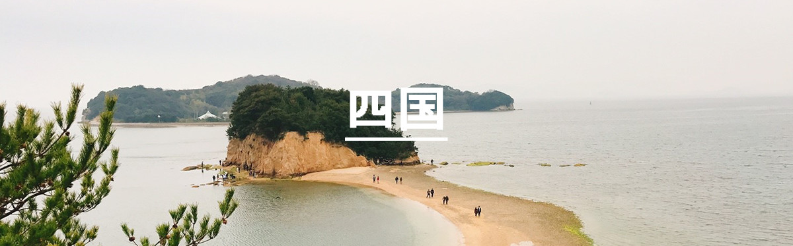
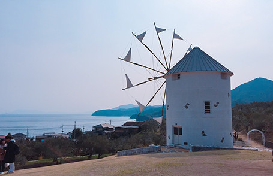

・小豆島 オリーブ公園 ギリシャ風車

四国、香川県からフェリーで1時間で行くことが出来る小豆島。
島であるため多くの海が見えるスポットがあります。
中でもおすすめはオリーブ園にあるギリシャ風車がある丘。
少し高い場所にあるため、海を一望することが出来ます。
小豆島オリーブ園から、オリーブの原木を見ながら坂を上っていくとこの場所に辿り着きます。
ここから見える海は静かで、心が穏やかになります。
朝早くに行くと、とても気持ちが良いスポットだと思います。
島であるため多くの海が見えるスポットがあります。
中でもおすすめはオリーブ園にあるギリシャ風車がある丘。
少し高い場所にあるため、海を一望することが出来ます。
小豆島オリーブ園から、オリーブの原木を見ながら坂を上っていくとこの場所に辿り着きます。
ここから見える海は静かで、心が穏やかになります。
朝早くに行くと、とても気持ちが良いスポットだと思います。